A short walk through how the indicator was constructed, from the raw index to the buy and sell signals.
And that's how we built our TBL Liquidity Indicator, available on

This model simply lets us see what liquidity is doing, and whether it is helping or harming risk assets. It is a tool that must be used alongside other indicators for informed decisions.